chapter09 -함수
함수는 입력을 가지고 어떤 일을 수행한 다음에 결과물을 내어놓는 것이라고 정의할 수 있다.
*함수을 사용하는 이유
- 프로그램시 똑같은 내용을 반복해서 적을 때가 있다. 이러한 경우를 한 뭉치로 묶어
"어떤 입력값을 주었을 때 어떤 리턴값을 돌려준다"라는 식의 함수를 작성하는 것이
현명한 방법이다.
- 자신이 만든 프로그램을 함수화 시켜 놓으면 프로그램의 흐름을 일목요연하게
감지 할 수 있게된다.
- 프로그램의 흐름 파악이 쉽고 에러가 어디에서 나는지 금방 알 수 있게 된다.
1.파이썬 함수의 구조
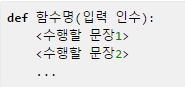
def는 함수를 만들 때 사용하는 예약어이다.
함수명은 함수를 만드는 사람이 임의로 만드는 것이다. 변수이름을 만드는 것과 같은 이치이다.
입력인수는 해당 함수에 입력으로 넣어주는 값이다.
다음에 수행할 문장을 수행한다.
def sum(a, b):
return a + b
"함수명이 sum이고 입력값으로 두 개의 값을 받으며 리턴값은 두 개의 입력값을 더한 값이다."
예제9.1
*sum함수를 먼저 만들어 준다.
def sum(a, b):
return a+b
*아래와 같이 사용하자
a = 3
b = 4
c = sum(a, b)
print(c)
->a와 b에 각각 3,4를 대입한 다음 이미 만들었던 sum 함수에 a,b를 입력값으로 주어서
c라는 함수의 리턴값을 돌려받는다. 결과값은 print(c)로 확인할 수 있고 7이 나온다.
2. 함수의 입력값과 리턴값
(1) 평범한 함수
입력값이 있고 리턴겂이 있는 평범한 함수
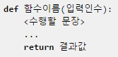
예제9.2
def sum(a, b):
result = a + b
return result *다음에 입력값을 주고 리턴값을 돌려 받아 보자.
a = sum(3, 4)
print(a)
-> 결과 : 7
(2)입력값이 없는 함수
def say():
return 'HI'
a = say()
print(a)-> say 함수를 쓰기 위해서는 괄호 안에 아무런 값도 넣지 않고 써야한다.
결과는 'HI'가 줄력된다.
(3)리턴값이 없는 함수
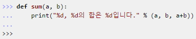
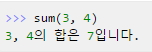
(4)입력값도 리턴값도 없는 함수
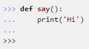
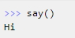
3. 입력값이 몇 개가 될 지 모를 때는 어떻게 해야 할까?
입력값을 주었을 때 그 입력값들을 모두 더해주는 함수를 생각해보면 몇개가 입력으로
들어올지 알 수 없다. 이럴때는 난감할 것이다.파이썬에서는 다음과 같은 것을 제공한다.
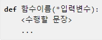
예제9.4
def sum_many(*args):
sum = 0
for i in args:
sum = sum + i
return sum ->위의 함수는 입력값이 몇 개든지 상관이 없다. args라는 변수가 입력값들을 전부 모아서
튜플로 만들어 주기 때문이다. 만약 sum_many(1, 2, 3)처럼 이 함수를 쓴다면 args는 (1, 2, 3)이 되고
sum_many(1, 2, 3, 4, 5, 6, 7, 8, 9, 10)처럼 하면 args는 (1, 2, 3, 4, 5, 6, 7, 8, 9, 10)이 된다.
*실제로 테스트해보자
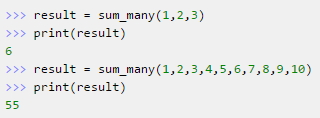
예제9.5
*def sum_many(*args) 처럼 *args를 사용할 경우 *args만 입력 인수로 올 수 있는 것은 아니다.
def sum_mul(choice, *args):
if choice == "sum":
result = 0
for i in args:
result = result + i
elif choice == "mul":
result = 1
for i in args:
result = result * i
return result ->위의 예는 입력 인수로 choice와 *args라는 것을 받는다. 따라서 다음과 같이 쓸 수 있을 것이다.
sum_mul('sum', 1,2,3,4) 또는 sum_mul('mul', 1,2,3,4,5)처럼 choice부분에는 'sum'이나 'mul'이라는 문자열을
그리고 그 뒤에는 개수에 상관없는 숫자를 입력으로 준다.
*실제로 테스트해보자
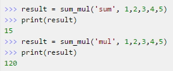
4. 입력값에 초기치 설정하기
예제9.6
def say_myself(name, old, man=True):
print("나의 이름은 %s 입니다." % name)
print("나이는 %d살입니다." % old)
if man:
print("남자입니다.")
else:
print("여자입니다.")-> man=True처럼 입력 인수에 미리 값을 넣어준 것이다. 이것이 바로 함수의 인수 초기치를 설정하는 방법이다.
항상 변하는 것이 아니라 아주 가끔 변하는 것일 때 이렇게 함수의 초기치를 미리 설정해 주는 것은 매우 유용하다.
초기화 시키고 싶은 입력 변수들은 항상 뒤쪽에 위치
*실제 테스트해보자
say_myself("박응용", 27)
say_myself("박응선", 27, False)
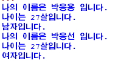
5. 함수 내에서 선언된 변수의 효력 범위
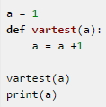
먼저 a라는 변수를 생성하고 1을 대입한다. 그리고 입력으로 들어온 값을 1만큼 더해주고 리턴값은 돌려주지 않는 vartest 함수에 입력 값으로 a를 주었다.
그 다음에 a의 값을 출력하게 하였다.
당연히 vartest에서 a를 1만큼 더했으니까 2가 출력되어야 할 것 같지만 프로그램 소스를 작성해서 실행시켜 보면 결과 값이 1이 나온다.
그 이유는 함수안에서 새로 만들어진 변수는 함수안에서만 쓰여지는 함수만의 변수이기 때문이다.
즉 def vartest(a)처럼 하면 이때 입력 인수를 뜻하는 변수 a는 함수안에서만 쓰이는 변수이지 함수 밖의 변수 a가 아니라는 말이다.
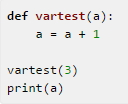
위의 프로그램 소스를 에디터로 작성해서 실행시키면 어떻게 될까? 에러가 날 것이라 생각한 독자는 모든 것을 이해한 사람이다.
vartest(3)을 수행하면 vartest라는 함수내에서 a는 4가 되지만 함수를 끝내고 난뒤에 print(a)라는 문장은 에러가 나게 된다.
그 이유는 a라는 변수는 어디에도 찾아 볼 수가 없기 때문이다. 다시 말하지만 함수 내에서 쓰이는 변수는 함수내에서 쓰일 뿐이지 함수 밖에서 사용될 수 있는 것이 아니다.
이것에 대해서 이해하는 것은 매우 중요하다.
그렇다면 vartest라는 함수를 이용해서 함수 외부의 a를 1만큼 증가시킬 수 있는 방법은 없을까? 라는 의문이 떠오르게 된다.
두 가지 해결 방법이 있을 수 있다
(1)
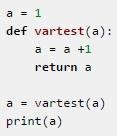
첫 번째 방법은 return을 이용하는 방법이다. vartest함수는 입력으로 들어온 값을 1만큼 더한 값을 돌려준다. 따라서 a = vartest(a)처럼 하면 a가 vartest함수의 리턴값으로 바뀌게 되는 것이다.
여기서도 물론 vartest함수 안의 a변수는 함수 밖의 a와는 다른 것이다.
(2)
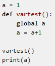
두 번째 방법은 global이라는 명령어를 이용하는 방법이다.
위의 예에서 보듯이 vartest안의 global a라는 문장은 함수 안에서 함수 밖의 a변수를 직접 사용하겠다는 말이다.
보통 프로그래밍을 할 때 global이라는 것은 쓰지 않는 것이 좋다. 왜냐하면 함수는 독립적으로 존재하는 것이 좋기 때문이다.
외부 변수에 종속적인 함수는 그다지 좋은 함수가 아니다.
가급적 이 global을 쓰는 방식을 피해야 할 것이다. 따라서 당연히 두 번째 방법보다는 첫 번째 방법이 좋다.
<출처> 점프 투 파이썬, 박응용(https://wikidocs.net/book/1)